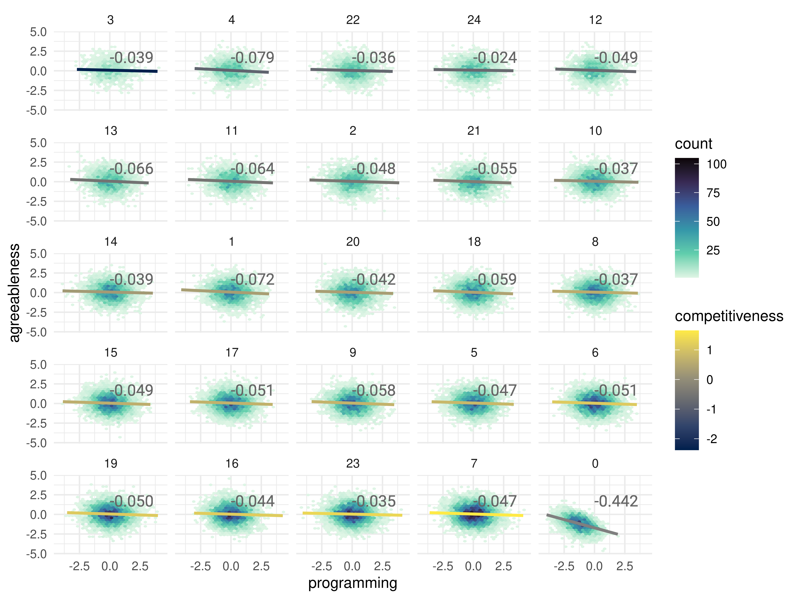

b0 = -1
b1 = .75
b2 = .05
b3 = .75
b4 = -.05How hiring could distort the (lack of) association between programming performance and agreeableness
What is conditioning on a collider
There’s this thing that can happen in analyses called “conditioning on a collider,” and it’s very bad. For a longer read, see Dr. Julia Rohrer’s great post on the topic. First, what’s a collider? Basically, it’s a variable that is caused by two other variables. Here’s a nice dag to illustrate:
\[ \begin{align} \text{Awesome hamburgers} &\rightarrow \text{Amazing Yelp Reviews} \leftarrow \text{Awesome french fries} \\ \end{align} \]
What we see here is a situation in which amazing yelp reviews are caused by a burger and fries place having amazing burgers and amazing fries. In fact, you can think of it as if having either amazing fries or and amazing burger is sufficient to get a 5 star average review. Now, on the whole, the overall quality of a restaurant, the chefs skills, etc, probably leads to both awesomeness in hamburgers and awesomeness in fries, so we can assume that in thew whole population of burger-and-fries-places these things are correlated. That is
\[ \text{cor}(\text{Awesome hamburgers}, \text{Awesome french fries}) > 0 \]
But if you’re looking at the subset of burger-and-fries-places that have 5 star reviews, you’re conditioning (i.e., adjusting the data in some way) on a collider (the review rating), and the correlation between the two variables will be distorted. In this 5-star sample, some of the places will be 5 stars because they have awesome burgers, and some will have 5 stars because of their fries. For the burger places, the fries will be a little worse. For the fries places, the burgers won’t be quite as good. And yeah, there are a few places where both are superb. So when you look at the correlation in this subsample you’ll see
\[ \text{cor}(\text{Awesome hamburgers}, \text{Awesome french fries} | \text{Amazing Yelp Reviews}) < 0 \]
dundunDUNNNNN!
Hiring in software engineering
With this example fresh in our minds, let’s imagine a situation in which decisions to hire someone for a software engineering job are determined (probabilisticaly) by the person’s programming performance, agreeableness (i.e., not being an asshole), and that the extent to which those factors play a role in hiring is determined by competitiveness of the company1. In more competitive companies, programming performance is weighed more heavily.
Now, crucially, there is no correlation in the population between agreeableness and programming performance. There are just as many nice people who can program very well as there are mean people who can program very well.
We will simulate this population by drawing scores of programming ability and agreeableness for the \(i\)th individual from a multivariate normal distribution in which this correlation is 0:
\[ \begin{bmatrix} \text{programming}_i \\ \text{agreeableness}_i \end{bmatrix} \sim N\left(\begin{bmatrix} 0 \\ 0 \end{bmatrix}, \begin{bmatrix} 1 & 0 \\ 0 & 1 \end{bmatrix}\right) \]
We can draw the competitiveness of a set of \(k\) companies similarly from a normal distribution:
\[ \text{competitiveness}_k \sim N(0, 1) \]
We will then simulate the hiring process by drawing from a Bernoulli distribution in which the probability of being hired is determined by the following model where competitiveness is encoded as the competitiveness score of the \(i\)th individual’s company, \(k\):
\[ \begin{align} \text{hired}_i &\sim \text{Bernoulli}(\theta_i) \\ \text{logit}(\theta_i) &= \beta_0 + \beta_1\cdot\text{programming}_i + \beta_2\cdot\text{programming}_i \times \text{competitiveness}_{k(i)} + \\ &\quad \beta_3\cdot\text{agreeableness}_i + \beta_4\cdot\text{agreeableness}_i \times \text{competitiveness}_{k(i)} \end{align} \]
For the moment we will just limit this simulation to one round of hiring, and we’ll set the beta weights to something reasonable.
- The intercept, \(\beta_0\), will be set to -1 (probability of being hired for an average programmer with average agreeableness at an average company is 0.27);
- the programming weight, \(\beta_1\), will be set to 0.75 (on the linear scale, for each standard deviation [SD] increase in programming performance you increase 0.75 points in log odds of being hired2;
- the programming-competitiveness interaction weight, \(\beta_2\), will be set to 0.05 (so for each SD increase in company competitiveness, the effect of programming performance on the linear log odds of being hired, that is, \(beta_1\), increases by 0.05);
- the agreeableness weight, \(\beta_3\), will be set to 0.75 (on the linear scale, for each SD increase in agreeableness you increase 0.75 points in log odds of being hired3);
- and the agreeableness-competitiveness interaction weight, \(\beta_4\), will be set to -0.05 (so for each SD increase in company competitiveness, the effect of agreeableness on the linear log odds of being hired, that is, \(\beta_3\), increases by -0.05, or in other words is reduced by 0.05).
To see the effect of these coefficients, let’s plot the hiring probibilities as heatmaps gridded by programming performance and agreeableness. We’ll plot these for three different levels of company competitiveness: low, medium, and high. We need a function to compute the \(\text{logit}(\theta_i)\) values first:
calculate_logit_theta <- function(df, beta0, beta1, beta2, beta3, beta4) {
# Validate input is a data.frame (or inherits from data.frame)
if (!inherits(df, "data.frame")) {
stop("Input must be a data.frame object or inherit from data.frame")
}
# Check if all required variables exist in the data.frame
required_vars <- c("programming", "competitiveness", "agreeableness")
missing_vars <- required_vars[!required_vars %in% names(df)]
if (length(missing_vars) > 0) {
stop(paste("Missing required variables:", paste(missing_vars, collapse = ", ")))
}
# Calculate logit(theta) using the provided equation
logit_theta <- beta0 +
beta1 * df$programming +
beta2 * df$programming * df$competitiveness +
beta3 * df$agreeableness +
beta4 * df$agreeableness * df$competitiveness
return(logit_theta)
}library(data.table)
grid_data <- CJ(agreeableness = seq(-3, 3, length.out = 100),
programming = seq(-3, 3, length.out = 100),
competitiveness = c(-1.5, 0, 1.5))
grid_data[, logit_theta := calculate_logit_theta(grid_data, b0, b1, b2, b3, b4)]
grid_data[, prob_hired := plogis(logit_theta)]
head(grid_data)Key: <agreeableness, programming, competitiveness>
agreeableness programming competitiveness logit_theta prob_hired
<num> <num> <num> <num> <num>
1: -3 -3.000000 -1.5 -5.500000 0.004070138
2: -3 -3.000000 0.0 -5.500000 0.004070138
3: -3 -3.000000 1.5 -5.500000 0.004070138
4: -3 -2.939394 -1.5 -5.459091 0.004239376
5: -3 -2.939394 0.0 -5.454545 0.004258607
6: -3 -2.939394 1.5 -5.450000 0.004277925grid_data_p <- CJ(p_agreeableness = seq(pnorm(-3), pnorm(3), length.out = 100),
p_programming = seq(pnorm(-3), pnorm(3), length.out = 100),
competitiveness = c(-1.5, 0, 1.5))
grid_data_p[, agreeableness := qnorm(p_agreeableness)]
grid_data_p[, programming := qnorm(p_programming)]
grid_data_p[, p_competitiveness := sprintf('%.2f', pnorm(competitiveness))]
grid_data_p[, logit_theta := calculate_logit_theta(grid_data_p, b0, b1, b2, b3, b4)]
grid_data_p[, prob_hired := plogis(logit_theta)]
head(grid_data_p)Key: <p_agreeableness, p_programming, competitiveness>
p_agreeableness p_programming competitiveness agreeableness programming
<num> <num> <num> <num> <num>
1: 0.001349898 0.001349898 -1.5 -3 -3.000000
2: 0.001349898 0.001349898 0.0 -3 -3.000000
3: 0.001349898 0.001349898 1.5 -3 -3.000000
4: 0.001349898 0.011423637 -1.5 -3 -2.275979
5: 0.001349898 0.011423637 0.0 -3 -2.275979
6: 0.001349898 0.011423637 1.5 -3 -2.275979
p_competitiveness logit_theta prob_hired
<char> <num> <num>
1: 0.07 -5.500000 0.004070138
2: 0.50 -5.500000 0.004070138
3: 0.93 -5.500000 0.004070138
4: 0.07 -5.011286 0.006618239
5: 0.50 -4.956984 0.006984977
6: 0.93 -4.902683 0.007371886Now that we have these data we can plot them nicely:
library(ggplot2)
ggplot(grid_data, aes(x = programming, y = agreeableness)) +
geom_tile(aes(fill = prob_hired)) +
geom_contour(aes(z = prob_hired), breaks = .5, color = "#666666", linewidth = .5) +
facet_wrap(~ competitiveness) +
scale_fill_viridis_c(option = 'rocket', limits = c(0,1)) +
theme_minimal() +
labs(title = "Hiring probabilities by programming performance and agreeableness",
x = "Programming performance (SDs from mean)",
y = "Agreeableness (SDs from mean)",
fill = "Probability of being hired")
library(ggplot2)
ggplot(grid_data_p, aes(x = p_programming, y = p_agreeableness)) +
geom_tile(aes(fill = prob_hired)) +
geom_contour(aes(z = prob_hired), breaks = .5, color = "#666666", linewidth = .5) +
facet_wrap(~ p_competitiveness) +
scale_fill_viridis_c(option = 'rocket', limits = c(0,1)) +
theme_minimal() +
labs(title = "Hiring probabilities by programming performance and agreeableness",
x = "Programming performance\n(cumulative probability density)",
y = "Agreeableness\n(cumulative probability density)",
fill = "Probability of being hired")
N = 1e5
M = 24Now we can simulate some data. First, we’ll draw our population of individuals (N = 10^{5}) and companies (M = 24) and then assume that each person applies to all companies and takes the job offer from the most competitive company probabilistically with probabilities determined by the softmax function.
softmax <- function(x, temperature = 1.0) {
x <- x / temperature
exp_x <- exp(x - max(x))
return(exp_x / sum(exp_x))
}
sample_company <- function(ks, weights, temperature = 1){
p <- softmax(weights, temperature = temperature)
k <- sample(ks, 1, prob = p)
return(k)
}
library(MASS)
set.seed(96703)
mu <- c(0, 0) # means for programming and agreeableness
# Creating a covariance matrix with correlation of 0
sigma <- matrix(c(1, 0,
0, 1), nrow = 2)
# Generate multivariate normal data
mvn_data <- mvrnorm(N, mu = mu, Sigma = sigma)
# Convert to data.table
population <- data.table(
programming = mvn_data[, 1],
agreeableness = mvn_data[, 2]
)
population[, pid := 1:.N]
# Generate company competitiveness scores
company_competitiveness <- rnorm(M, 0, 1)
#make the multilevel dataset, one row per person per company
population <- population[rep(1:.N, each = M)]
population[, competitiveness := rep(company_competitiveness, N)]
population[, kid := rep(1:M, N)]
population[, hired := rbinom(.N, 1, plogis(calculate_logit_theta(.SD, b0, b1, b2, b3, b4)))]
population_jobs <- population[, .(
agreeableness = unique(agreeableness),
programming = unique(programming),
kid = fifelse(any(hired == 1),
sample_company(kid, competitiveness, temperature = 2),
0)),
by = pid]
setorder(population_jobs, pid)
population_jobs <- unique(population[, c('kid', 'competitiveness')])[population_jobs, on = 'kid']
population_jobs[, competitiveness_quantile := cut(competitiveness, quantile(competitiveness, na.rm = TRUE, probs = seq(0, 1, 1/10)), include.lowest = TRUE, labels = FALSE)]
population_jobs[, kid_factor := reorder(kid, competitiveness)]population_jobs[, slope :=
coef(lm(programming ~ agreeableness, data = .SD))[2],
by = kid_factor]
population_jobs[, slope_text := sprintf(
'%0.3f',
slope
), by = kid_factor]
ggplot(population_jobs, aes(programming, agreeableness)) +
geom_hex() +
geom_smooth(aes(color = competitiveness), method = 'lm') +
geom_text(aes(x = median(programming), y = median(agreeableness), label = slope_text),
hjust = 0, vjust = 0, size = 4, nudge_y = 1,
family = 'Roboto', color = '#666666') +
facet_wrap(~kid_factor) +
scale_fill_viridis_c(option = 'mako', begin = 1, end = 0) +
scale_color_viridis_c(option = 'cividis') +
theme_minimal()
library(parameters)
print_html(parameters(lm(programming ~ agreeableness, data = population_jobs[kid > 0])))| Parameter | Coefficient | SE | 95% CI | t(96446) | p |
|---|---|---|---|---|---|
| (Intercept) | 0.05 | 3.15e-03 | (0.04, 0.05) | 15.18 | < .001 |
| agreeableness | -0.05 | 3.22e-03 | (-0.06, -0.04) | -15.14 | < .001 |
print_html(parameters(lm(programming ~ agreeableness, data = population_jobs[kid == 0])))| Parameter | Coefficient | SE | 95% CI | t(3550) | p |
|---|---|---|---|---|---|
| (Intercept) | -1.77 | 0.02 | (-1.81, -1.72) | -78.67 | < .001 |
| agreeableness | -0.44 | 0.02 | (-0.47, -0.41) | -28.60 | < .001 |
print_html(parameters(lm(programming ~ agreeableness, data = population_jobs)))| Parameter | Coefficient | SE | 95% CI | t(99998) | p |
|---|---|---|---|---|---|
| (Intercept) | 5.44e-05 | 3.17e-03 | (-6.16e-03, 6.27e-03) | 0.02 | 0.986 |
| agreeableness | -9.76e-04 | 3.17e-03 | (-7.19e-03, 5.24e-03) | -0.31 | 0.758 |
Footnotes
In a very simplified way, we can imagine high-paying jobs at FANG companies being more competitive than lower paying jobs in government. The incentives for FANG companies, we imagine in this situaton, are to produce salable software products, company culture be damned. Of course this isn’t how it really is but it’s a useful simplification for this illustration.↩︎
from baseline chance, 0.27, to +1 SD in programming performance we move to a probability of 0.44↩︎
from baseline chance, 0.27, to +1 SD in agreeableness we move to a probability of 0.44↩︎